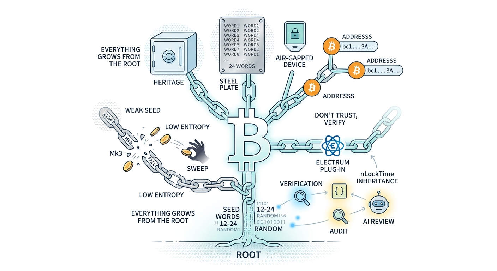

Forty minutes
On 30 July 2026, in a window of roughly forty minutes, hundreds of Bitcoin addresses were emptied in a coordinated sweep. The first count spoke of about 594 BTC taken from some 500 addresses. Within a day, independent researchers raised the estimate to more than 1,082 BTC drained from nearly 1,200 wallets. Many of them had been dormant for years — the wallets of long-term holders who had done, by every common standard, everything right.
There was no phishing. No malware. No stolen device, no coerced signature, no compromised computer. The owners of those coins were attacked through something that happened years earlier, in the few seconds when their wallet was born: the generation of the seed.
Coinkite, the maker of the Coldcard hardware wallet, published a security advisory the same day. During a firmware library migration in early 2021, two random-number functions with matching interfaces had been confused: instead of drawing from the device's hardware true random number generator, seed creation could fall back to a weak software routine fed by predictable values such as the device's serial number and internal clock. Seeds generated on the Mk3 from firmware 4.0.1 (March 2021) onward were the most exposed; seeds generated on Mk4, Mk5 and Q devices before the emergency fixes carried roughly 72 bits of entropy instead of the expected 128.
To be clear about what that means: a properly generated 12-word seed is protected by a number of combinations so large that guessing it is, for all practical purposes, impossible. Cut the entropy down far enough, and "impossible" quietly becomes "a matter of compute budget". The owners never saw anything change. The words on their steel plates looked exactly the same. The weakness was invisible — until someone found it, enumerated the candidate seeds, and swept the funds.
Everything grows from the root
Bitcoin's entire security model is a chain that begins at one point: a large random number. From that number comes the seed; from the seed, the private keys; from the keys, the addresses; from the addresses, everything else — cold storage, multisig, timelocks, inheritance plans, all of it.
This chain has a property that is easy to state and easy to forget: it is only as strong as its first link. You can engrave your seed on titanium, lock it in a vault, split it across continents, sign every transaction from an air-gapped bunker — and none of it matters if the random number at the root was not random enough. If security is missing at the root, everything built on top of it is theatre.
That is why entropy is not an implementation detail. It is the foundation of ownership itself. And it is why the question "how was this seed generated, and can I verify it?" deserves at least as much attention as the questions people usually ask — which device to buy, which metal plate to engrave, which passphrase scheme to use.
The limits of "don't trust, verify"
Bitcoin's most repeated maxim is don't trust, verify. The Coldcard incident is a sobering lesson in how hard that maxim is to practice — and an honest analysis has to include an uncomfortable fact: Coldcard's firmware has always been open source. The vulnerable code sat in public view for more than four years. Openness was necessary, but it was not sufficient.
Coinkite itself offered a telling hypothesis about how the flaw was finally found: someone, they suggest, used AI to review old versions of the public firmware and stumbled upon the issue. More bitter still, the company had recently run its own AI-assisted security review — which found nothing.
So what actually protects a seed-generation path? Three things, and all three have to be present at once:
- Openness — the code must be publicly readable. Without it, verification is impossible by definition.
- Breadth of review — openness only pays off when many independent eyes, over many years, actually look. A niche codebase, however public, can carry a subtle bug for half a decade.
- Practical verifiability — the user, or anyone acting on the user's behalf, must be realistically able to check what runs. A general-purpose computer running open software can be inspected end to end. The silicon inside a sealed device cannot: you can read the firmware, but you cannot look inside the chip that is supposed to produce the randomness. At some point, a closed physical box always asks for a residue of trust.
None of this means hardware wallets are useless. Air-gapped signing genuinely protects against malware on your computer, and that threat is real. But the incident draws the boundary clearly: a hardware device can protect keys after they exist. It cannot make its own birth verifiable. And knowledge — understanding where your entropy comes from and how to check it — protects you in ways no purchased device can.
Why we did not reinvent the wallet
When we designed Bitcoin After Life, one decision came before all others: the protocol would live inside Electrum as a plug-in, not inside a new wallet of our own.
It would have been more glamorous to ship "the BAL wallet". It also would have been irresponsible. An inheritance protocol asks people to plan across decades. Whoever asks for that kind of time horizon has a duty to build on the most scrutinized foundations available — not on code that is six months old, however carefully written.
Electrum has existed since 2011. It is one of the most reviewed pieces of Bitcoin software in the world, it has survived fifteen years of adversarial attention, and its seed handling is publicly documented down to the mathematics. A standard Electrum seed phrase carries 132 bits of entropy, drawn from the operating system's cryptographically secure random number generator — a component that is not a niche codebase but one of the most heavily audited pieces of software on the planet, reviewed for decades by the entire security industry across every field that depends on it. On top of that, Electrum's documented seed-version design brings the effective cost of a brute-force attack to roughly 2135 operations. These are not marketing figures; they are published, and anyone can check the code that implements them.
This is the meaning of a choice we made early and have repeated often: remaining a plug-in of one of the most tested wallets in the world is a deliberate design decision, not a fallback. We add exactly one thing — time-locked inheritance through nLockTime and the Will-Executor network — and we inherit everything else, including seed generation, from a codebase that has earned trust the only way trust is earned in this industry: by surviving.
Ask yourself the question we asked ourselves: would you leave your heirs' future in a wallet released last year? Are you able to go all the way and verify its code yourself? If the honest answer is no, then the age and the breadth of review of the foundation are not details. They are the whole point.
Verification in the age of AI
There is one genuinely new element in this story, and it deserves attention: the flaw was likely found — after four and a half years of human blindness — by a machine reading public code.
That cuts both ways. The same capability that armed an attacker is now in everyone's hands, and it changes the economics of don't trust, verify. Reviewing a seed-generation path used to require rare expertise and long hours. Today, anyone can take the open code of their wallet, hand it to a capable AI model, and ask pointed questions: Where does the entropy come from? Is there any fallback path? Under what conditions could this produce a predictable seed? An AI review is not a guarantee — Coinkite's own attempt proves that — but it raises the floor dramatically, and it turns verification from a specialist's privilege into an ordinary habit.
Our position is simple: a verification of the seed-generation technology should always be done — before funds are deposited, and again when the software is updated. This is only possible with open code running on hardware you can inspect. It is one more reason the closed box, however well built, sits uneasily with Bitcoin's founding rule.
What this means for inheritance
An inheritance plan compounds every assumption you make today across the decades it must survive. A weakness that is merely theoretical over one year becomes a real risk over thirty. The Coldcard sweep targeted dormant addresses — precisely the profile of long-term, set-aside funds. Precisely the profile of an inheritance.
This is why Bitcoin After Life's architecture keeps returning to the same principles: use Bitcoin's native, consensus-level features (nLockTime) rather than novel constructions; rely on incentives rather than promises; renew the inheritance transaction every two to three years, so the plan absorbs protocol improvements and lessons like this one; and build only on code that the world has been attacking, and failing to break, for many years.
And one practical note, because it matters more than any argument: if you generated a seed on an affected Coldcard device since March 2021, follow Coinkite's advisory — update the firmware, generate a new seed on corrected software, and move your funds. Whatever wallet you use, your inheritance plan is only as good as the seed underneath it.
Conclusion: the root comes first
The lesson of 30 July is not that one vendor failed. Every codebase can carry a bug, and Coinkite's transparency after the fact was the correct response. The lesson is older and simpler: everything starts with the seed. If randomness is missing at the root, no vault, no steel, no air gap and no inheritance protocol can compensate. Security is not something you add on top; it is something you either have at the foundation or do not have at all.
We chose not to reinvent the wallet. We chose the foundation with fifteen years of scars, public mathematics, and entropy drawn from the most reviewed code on earth. Boring choices, made deliberately — because your heirs will not care how innovative your wallet looked. They will care that the seed was made the way a seed should be made.
Those who want to dig deeper will find the Electrum plug-in, instructions, and practical examples at bitcoin-after.life. The code is open source, verifiable by anyone — with your own eyes, or with an AI at your side.
Verify the root. Everything else follows.
This article is for informational purposes only and does not constitute legal, tax, or security advice. Facts about the 30 July 2026 incident reflect public reporting and Coinkite's advisory at the time of writing; consult the vendor's official communications for up-to-date guidance on affected devices.